1. Mucheru World of Golf
August was a transformational phase for Mucheru World of Golf, highlighted by the strategic delivery of major water harvesting reservoirs, continuous heavy machinery operations, and advanced green engineering:
- Water Reservoir Campaign (Dams 1, 2 & 3): Successfully excavated Dam 1 (groundbreaking Aug 7, 100% completed Aug 10), continuous deepening and murram extraction at Dam 2, and full groundbreaking through 100% completion of Dam 3 (Aug 16–20). Cleared residual murram deposits from Dam 1 basin at month-end to maximize water retention.
- Mass Tipper Earthmoving Haulage: Coordinated 842 tipper lorry loads of excavated murram fill, building up the proposed clubhouse plateau, access roadbeds, and course contours.
- Course Contouring & Teebox Grading (14+ Teeboxes): Graded, leveled, and compacted teebox platforms across the course including Teeboxes No. 1, 2, 3, 4, 5, 7, 8, 9, 10, 11, 12, 13, 14, 15, 16, 17, and 18. Constructed a brand-new elevated plateau for Green No. 7 teebox.
- Greens Sub-Base Engineering & Drainage: Installed sub-surface PVC drainage piping networks across Greens 1, 2, 3, 4, 9, and 14. Completed topsoil rotavation and ploughing on Green No. 10 using the farm tractor, followed by geometric chalk surveying and full herringbone trench excavation. Adjusted rear putting contours on Green No. 9.
- Masterplan Surveying & Perimeter Landscaping: Architect Kevin Njoroge conducted clubhouse footprint setting and reference pegging. Excavated tree-planting holes along the boundary perimeter for landscaping.
Site Milestone Summary: 3 Water Reservoirs Delivered & Advanced Course Contouring
Complete excavation of Dams 1 & 3, deepening of Dam 2, 842 tipper loads of earth fill relocated, 14+ teeboxes leveled, and advanced herringbone drainage networks cut on Greens 1–4 and Green 10.
Consolidated machinery operational deployment, hourly billing rates, and haulage logistics across August. In strict accordance with site equipment rules, the Front Loader and Backhoe refer to the single on-site Backhoe Loader asset and are fully consolidated under a single entry:
| Equipment / Haulage Asset | Primary Operational Scope | Active Period | Hours / Trips | Billing Rate | Total Cost (KES) |
|---|---|---|---|---|---|
| Sunward SWE210 Tracked Hydraulic Excavator | Dams 1, 2 & 3 deep basin cutting, murram excavation, embankment shaping & tipper loading | Aug 7–21 | 123.10 hrs | KES 8,500 / hr | KES 1,046,350.00 |
| XGMA Backhoe Loader (Consolidated Front Loader & Backhoe) | Dam 1 & 2 basin leveling, teebox grading (Tees 1–18), Green 5, 7, 8, 9 & 17 shaping, palm tree holes, road clearing | Aug 13–31 | 138.72 hrs | KES 6,500 / hr | KES 901,751.67 |
| Tipper Lorry Earthmoving Haulage | Transport of excavated murram from dam basins to clubhouse zone, roadbeds & elevated teeboxes | Aug 7–21 | 842 Trips | KES 1,000 / trip | KES 842,000.00 |
| Site Agricultural Tractor & Trailer (Kinoti) | Green 10 rotavating & ploughing, internal trailer haulage (15+ trips), palm tree soil staging | Full Month | Internal Asset | Farm Asset | Internal Ops |
| Direct Heavy Plant Subtotal (Excavator + Backhoe Loader) | 261.82 Hours | - | KES 1,948,101.67 | ||
| CUMULATIVE AUGUST EARTHMOVING & HAULAGE TOTAL | 261.82h + 842 Trips | - | KES 2,790,101.67 | ||
| Material Type | Delivery Volume / Specification | Placement Location & Structural Application | Status |
|---|---|---|---|
| Hardcore Quarry Stones | Multiple commercial tipper loads (15+ tons/load) | Green 1, 3, 4, 9, and 14 base reinforcement and sub-grade stabilization | Utilized |
| Pumice Volcanic Rock | Multiple full lorry loads | Greens drainage sub-layering and water filtration beds | Utilized |
| Ballast Stone | Tipper loads (graded aggregates) | Sub-base drainage layering over hardcore and around PVC pipe trenches | Utilized |
| Clean Construction Sand | Multiple tipper lorry deliveries | Greens rootzone mix staging and pipe bedding backfill | Staged / Laid |
| High-Grade Red Topsoil | Heavy tipper loads | Tee box profiling, Green 10 conditioning, and fairways contour smoothing | Graded |
| PVC Irrigation & Drainage Pipes | Full bundled delivery (pipes, fittings, sprinklers) | Herringbone subsurface drainage on Greens 1–4, 9, 10 & course irrigation | Installed |
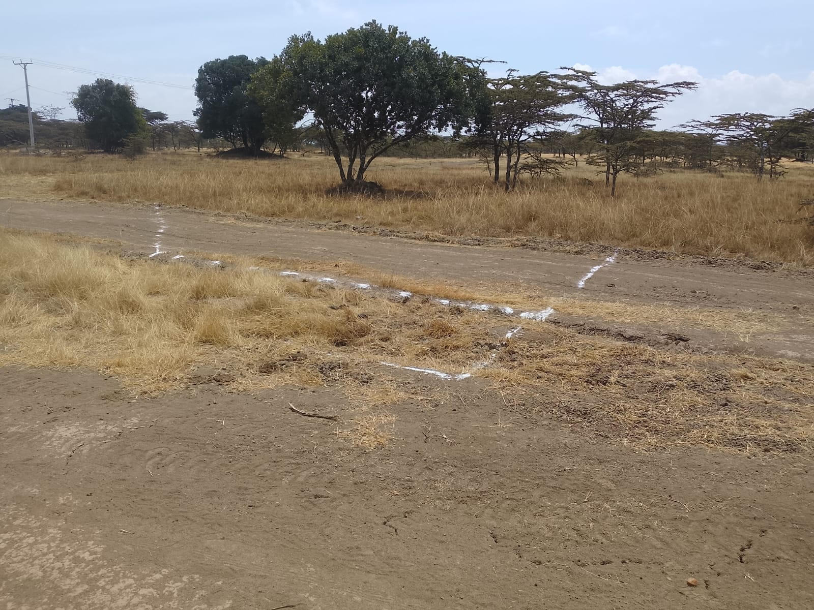
Clubhouse Dimensional Layout Survey
Architect Kevin Njoroge surveying and pegging out the clubhouse footprint alignment on August 1st.
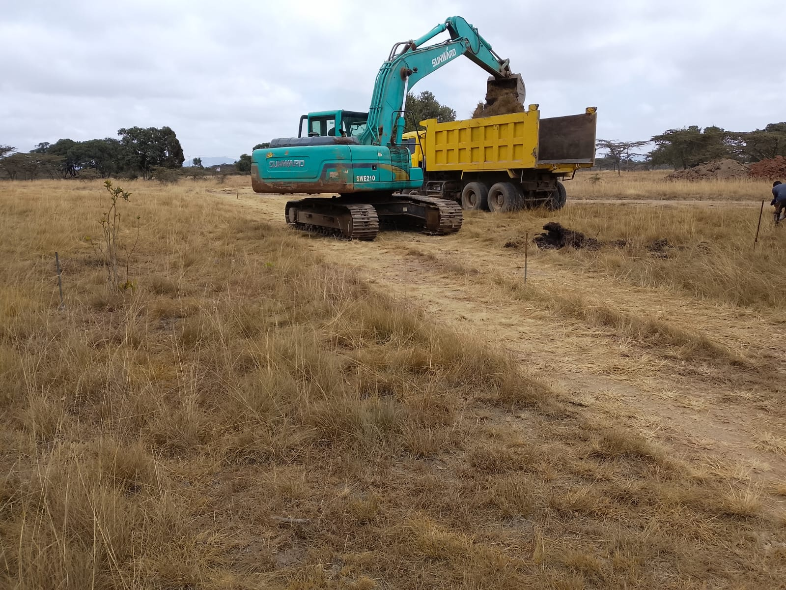
Dam 3 Reservoir Basin Groundbreaking
Tracked Hydraulic Excavator cutting into deep strata to establish the Dam 3 water reservoir (Aug 16).
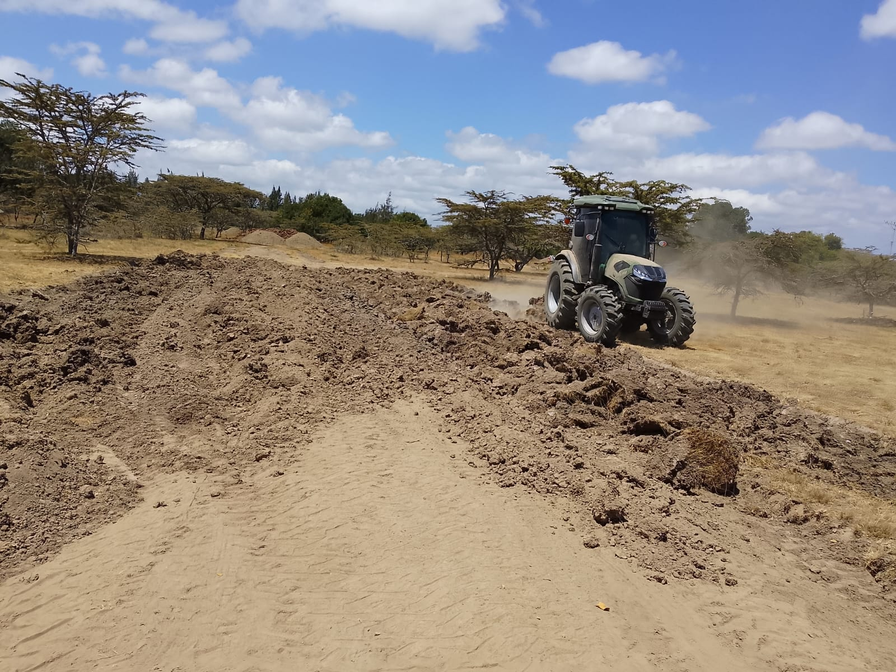
Green No. 10 Agricultural Rotavation & Ploughing
Site tractor conditioning and pulverizing topsoil across Green No. 10 with the rotavator attachment (Aug 24).
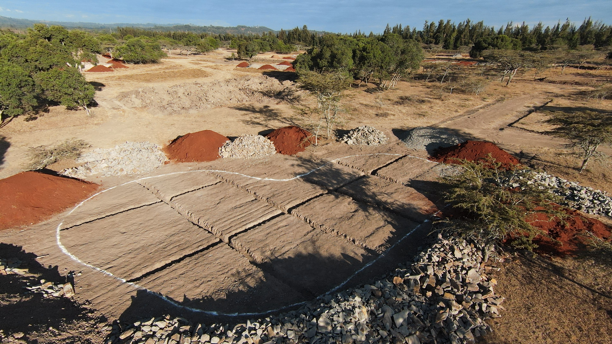
Green No. 10 Drainage Grid (Drone Aerial)
High-resolution drone perspective showing surveyed chalk grid lines and excavated herringbone trenches (Aug 31).
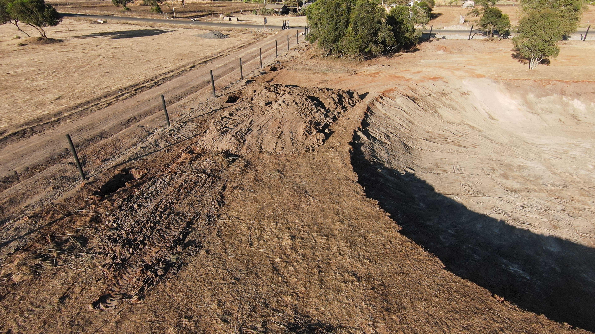
Green No. 7 Elevated Teebox Plateau
Drone overview of the newly graded, raised teebox platform built adjacent to the boundary road (Aug 31).
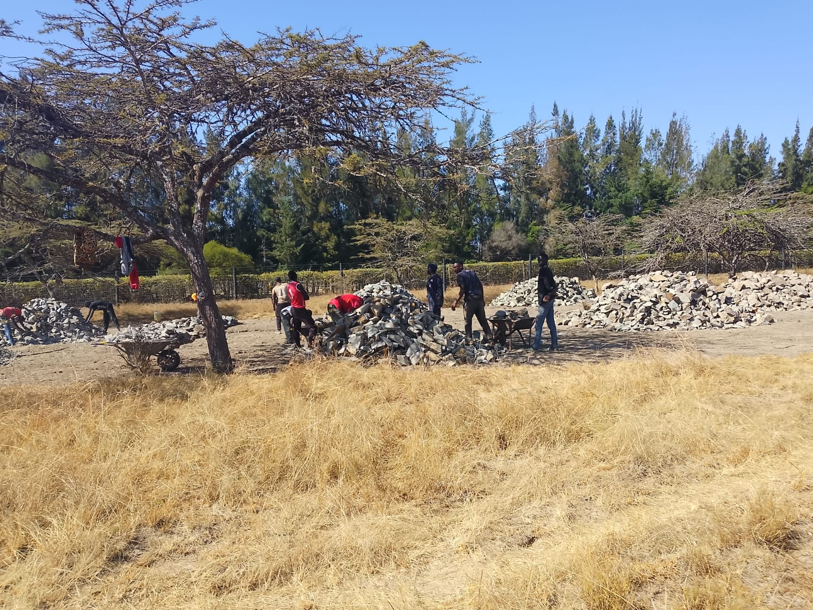
Greens Hardcore Sub-Base Placement
Labor crew hand-arranging hardcore foundation stone across green profiles to ensure structural stability.
2. Chaka Farms
Chaka Farms maintained high operational consistency throughout August, sustaining reliable daily milk production, exemplary animal welfare, specialized canine unit discipline, and complete compound maintenance:
- Dairy Herd Production (199.60 Litres Total): Maintained regular twice-daily milking routines with 122.60 Litres harvested during morning sessions and 79.00 Litres during evening sessions, averaging 6.44 Litres/day.
- Strict Ration Accounting & Net Inventory: Rigorously recorded all daily milk allocations drawn from production, including goat kids nursery rations (14.0L total) and authorized staff allocations (Gladys 3.5L, Maasai 4.5L), leaving a verified net farm inventory balance of 177.60 Litres.
- Livestock Census & Herd Healthcare: Monitored and cared for a healthy livestock population comprising 124+ heads across dairy cattle, Dorper sheep, goats, goat kids, and geese. Executed regular acaricide tick spraying, cow shed sanitization, and hoof care.
- Canine Unit Discipline & Infrastructure Upgrades: Willy and Mwangi led daily kennel stall washing, scrubbing, and sanitization; dog bathing and coat grooming; cooked balanced nutritional canine meals; conducted structured on-leash walking drills, manners commands, and off-leash field runs with livestock socialization. Guided Coby through progressive rest, medical care, and rehabilitation, and completed metal gate fitting for the main entrance kennel.
- Farm Grounds & Plumbing Upkeep: Executed paddock rain hose irrigation; repaired and unblocked farm drainage channels, sinks, and washing bays; and maintained living quarters cleanliness through Monica and Margaret.
Livestock & Dairy Summary: 199.6L Gross Harvested & 100% Herd Health Maintained
Consistent dairy output across 31 days with strict litre-based accounting, flawless canine unit health and obedience protocols, and comprehensive farm infrastructure cleanliness.
Consolidated production breakdown strictly recorded in Litres (L), documenting gross milking output, deducted nursery/staff rations, and net farm inventory balances:
| Production Period | Active Days | Morn (L) | Eve (L) | Gross (L) | Rations (L) | Net Balance (L) |
|---|---|---|---|---|---|---|
| Week 1 (Aug 1 – Aug 7) | 7 Days | 25.0 L | 18.0 L | 43.0 L | - 0.0 L* | 43.0 L |
| Week 2 (Aug 8 – Aug 14) | 7 Days | 26.0 L | 19.0 L | 45.0 L | - 0.0 L* | 45.0 L |
| Week 3 (Aug 15 – Aug 21) | 7 Days | 27.0 L | 15.0 L | 42.0 L | - 2.0 L | 40.0 L |
| Week 4 & Month-End (Aug 22 – Aug 31) | 10 Days | 44.6 L | 25.0 L | 69.6 L | - 20.0 L | 49.6 L |
| MONTHLY CUMULATIVE DAIRY TOTALS | 122.60 L | 79.00 L | 199.60 L | - 22.00 L | 177.60 L | |
*Note: Detailed ration deduction itemization was formally integrated into daily data tables from mid-August onward. Total deductions include 14.0L Goat Kids Rations, 3.5L Gladys, and 4.5L Maasai.
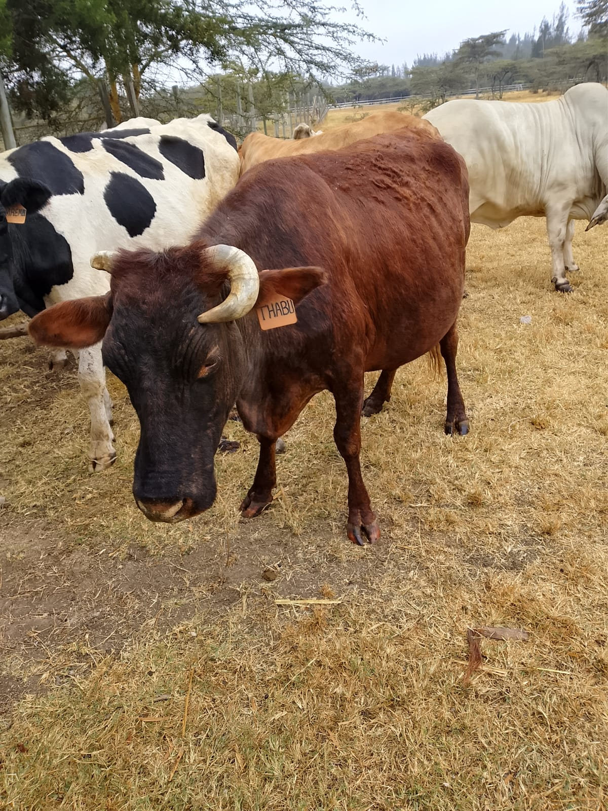
Dairy Herd Nutrition & Welfare
Daily feeding, supplemental mineral lick nutrition, and health monitoring for the dairy cow herd.
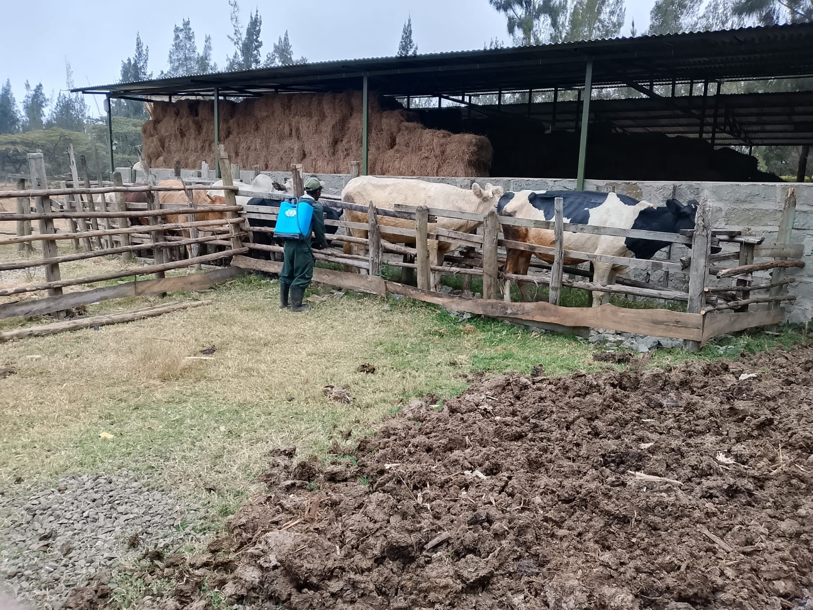
Cattle Tick Spraying Routine
Regular acaricide spray application to safeguard herd biosecurity and prevent tick-borne vectors.
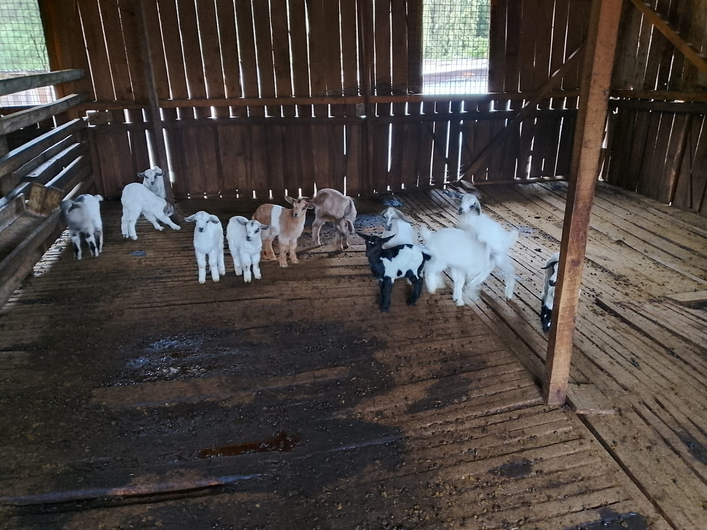
Goat Kids Nursery Flock
Thriving goat kids receiving dedicated daily milk rations (1.0L/day) in the secured nursery shed.
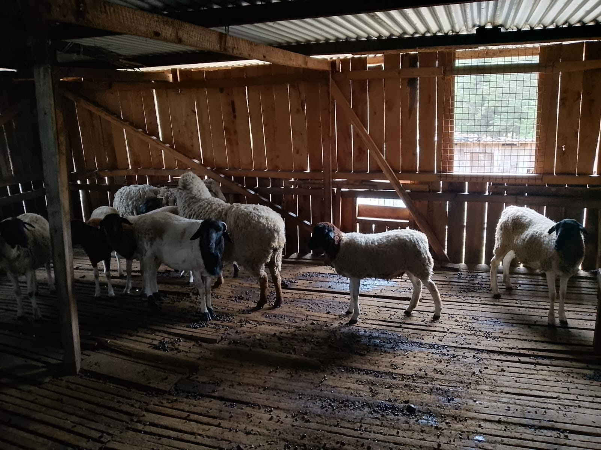
Dorper Sheep Flock Management
Healthy Dorper sheep flock grazing across rain-hose irrigated pastures under Kamandau's supervision.
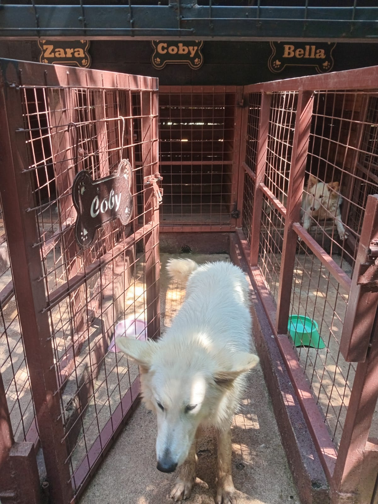
Canine Unit Bathing & Coat Care
Weekly medicated bathing, coat grooming, and hygiene sanitation for the farm's security dogs.
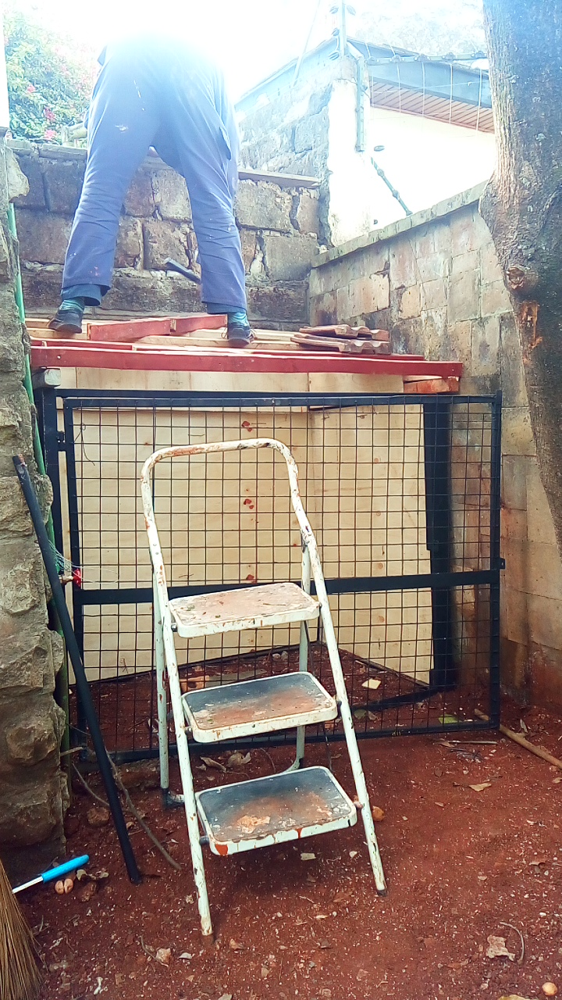
Security Dog Kennel Gate Fitting
Structural metal mesh fabrication and gate fitting for the perimeter security dog kennel stall.
3. Kabete Residence
Kabete Residence achieved major milestone completions across structural preservation, civil excavation, interior storage fitting, and domestic animal care under Njoki's leadership:
- Main House Roof Painting (100% Complete): Successfully executed thorough surface pressure-washing, wire-brush descaling, crack priming, and multi-coat protective weather-resistant tile painting across the entire main house roof profile.
- Outbuilding & Canopy Paintworks (100% Complete): Completed full structural painting and protective coating on the carport parking canopy, generator house roof tiles, lawnmower storage shed, and entrance sentry post.
- Outdoor Fireplace Foundation Excavation: Conducted extensive manual excavation, cutting away the vertical red earth embankment using pickaxes and jembes to widen the structural footing for the outdoor fireplace, while clearing and sorting salvaged masonry stone blocks along the perimeter retaining wall.
- Main Water Storage Tank Foundation Slab: Prepared, tied rebar reinforcement, and washed the heavy-duty concrete foundation slab for the main estate water storage tank installation.
- Cold Room Custom Shelving Fit-Out: Assembled, fitted, and wall-anchored heavy-duty laminated wooden side shelving units and brackets inside the cold room to expand food storage capacity.
- Resident Domestic Pets Care: Provided daily attentive care, balanced evening meals, grooming, and companionship for Ajabu the Golden Retriever and resident cats (Reo, Mocha & Aiko).
Major Milestone: 100% Roof Renovation Complete & Fireplace Footing Widened
Flawless execution of estate-wide roof tile painting across the main house and auxiliary buildings, significant excavation headway on the outdoor fireplace footing, and cold room cabinetry installed.
| Project Workstream | Operational Scope & Deliverables | Execution Period | Completion Status |
|---|---|---|---|
| Main House Roof Tiles Painting | Pressure washing, fungal treatment, priming & multi-coat protective acrylic paint application | Early – Mid Aug | 100% Completed |
| Carport Canopy Structure | Steel frame wire-brushing, anti-rust primer & glossy structural topcoat painting | Mid August | 100% Completed |
| Generator & Mower House Roof | Roof tile pressure wash, tile realignment, and weather-seal coat application | Mid August | 100% Completed |
| Main Water Tank Concrete Slab | Rebar steel grid tying, concrete slab casting, chemical cure & pressure wash | Mid August | 100% Completed |
| Outdoor Fireplace Civil Excavation | Vertical earth bank cutback, foundation footing widening & masonry rubble clearance | Late August | Footing Widened |
| Cold Room Custom Side Shelves | Wall-mounted bracket anchoring and laminated wooden shelving panels installation | Late August | 100% Installed |
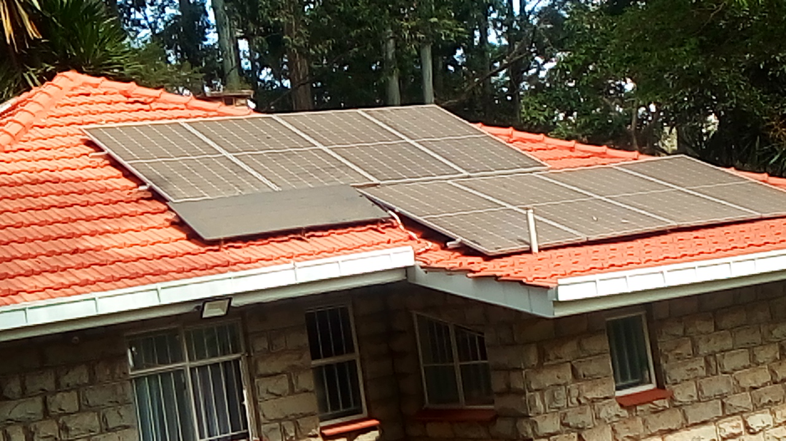
Main House Roof Tile Painting (100%)
Completed multi-coat weather-resistant roof tile painting showcasing flawless finish and color uniformity.
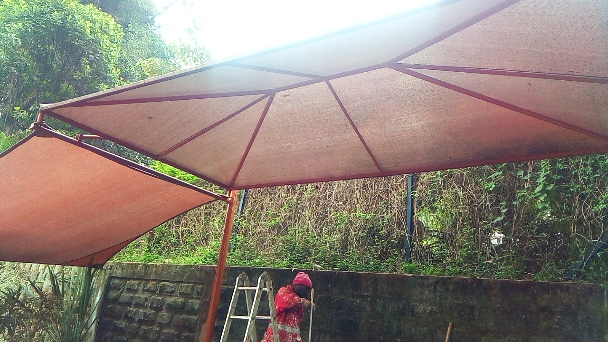
Carport Canopy Protective Coating
Fully refurbished and repainted structural steel carport canopy and entrance parking pergola.
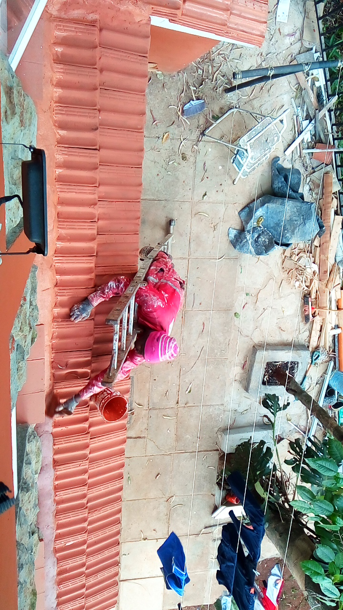
Generator & Mower Shed Roof
Cleanly painted roof tiles on auxiliary generator house matching main residence aesthetic.
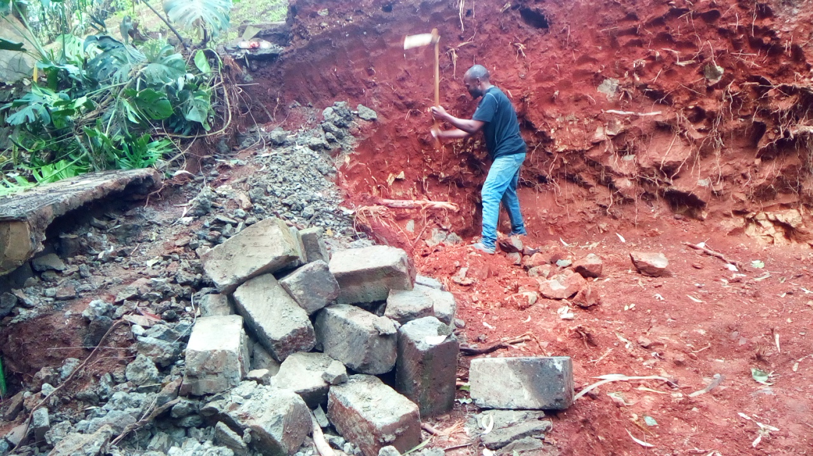
Fireplace Footing Bank Excavation
Manual pickaxe earthwork cutting back vertical red clay bank to widen outdoor fireplace foundation.
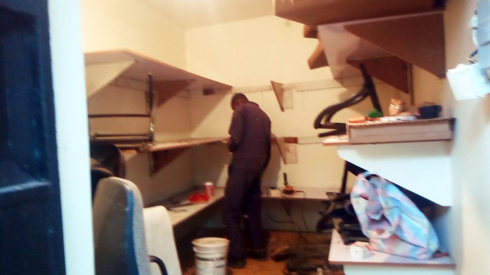
Cold Room Shelving Fit-Out
Carpenter assembling and anchoring custom laminated wooden storage shelving inside cold room.

Resident Pets — Ajabu Having Dinner
Ajabu the Golden Retriever enjoying his evening meal on the corridor under Njoki's attentive care.
4. Amani Cottage
Amani Cottage maintained pristine exterior grounds presentation and high interior housekeeping standards across the full month of August:
- CAN Turf Grass Fertilization: Evenly applied Calcium Ammonium Nitrate (CAN) granular fertilizer across the front lawns to stimulate vigorous, dense root growth and maintain vibrant emerald turf coloration.
- Rotary Sprinkler & Hose Line Irrigation: Deployed portable elevated rotary sprinklers and hose lines across front lawns, landscaped flower beds, and shaded woodland perimeters, adapting run-times to optimize soil hydration.
- Garden Cleanup & Woodland Litter Collection: Conducted thorough daily litter sweeping, clearing fallen branches, leaf litter, and gravel debris along natural stone walkways and driveway boundaries.
- Two-Story Comprehensive Housekeeping: Maintained cleanliness across all upstairs and downstairs living suites, completing surface dusting, tile mopping, bathroom sanitization, fresh linen changes, and guest bed preparation.
Grounds & Interior Summary: Lush Lawns & Pristine Cottage Presentation
Optimal lawn vigor sustained through targeted CAN fertilization and sprinkler irrigation, paired with continuous two-story housekeeping and linen care.
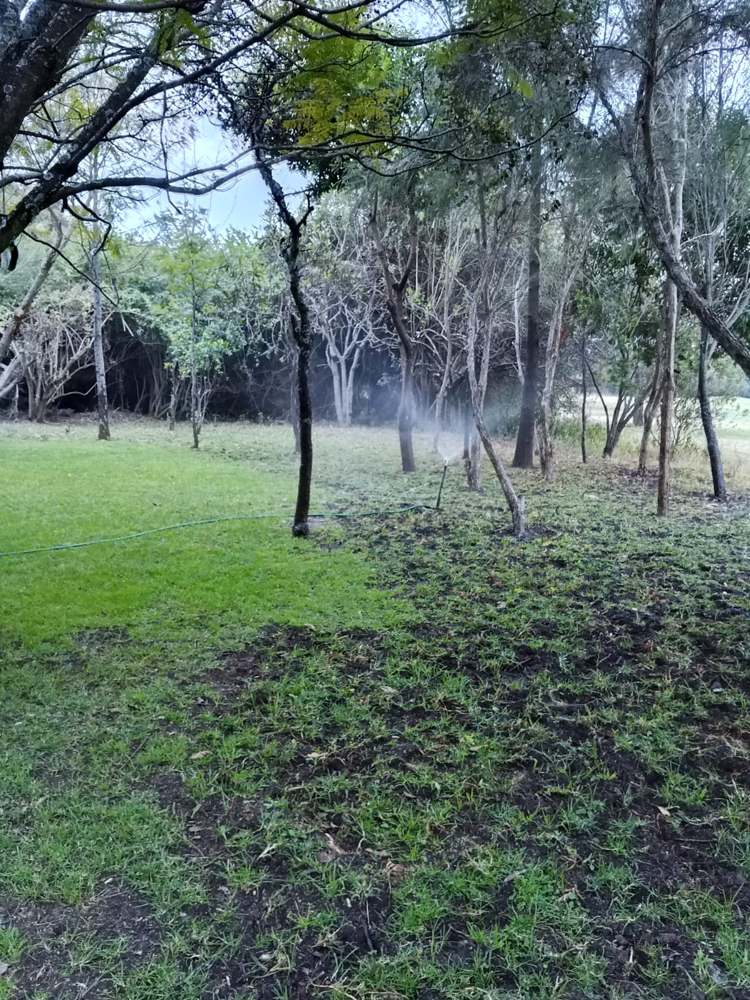
Front Lawn Irrigation
Rotary sprinkler delivering mist irrigation across the front lawn perimeter.
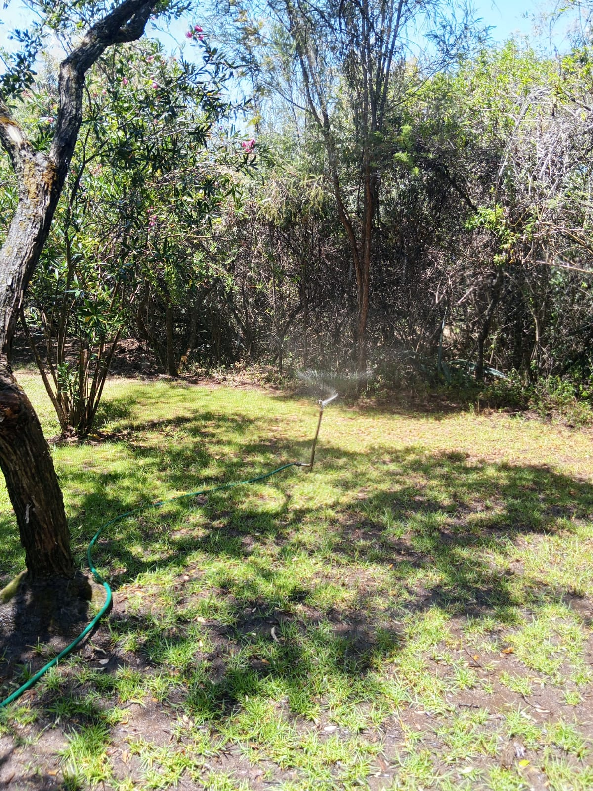
Hydrated Turf Grounds
Vibrant emerald green turf condition achieved through CAN fertilizer and watering.
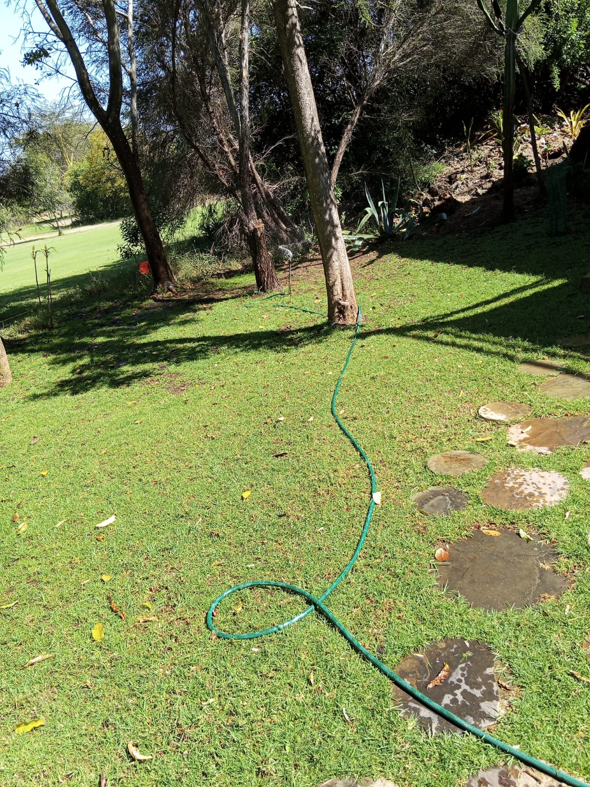
Irrigation Line Route
Garden hose line routed across stone stepping pathway to supply lawn sprinklers.